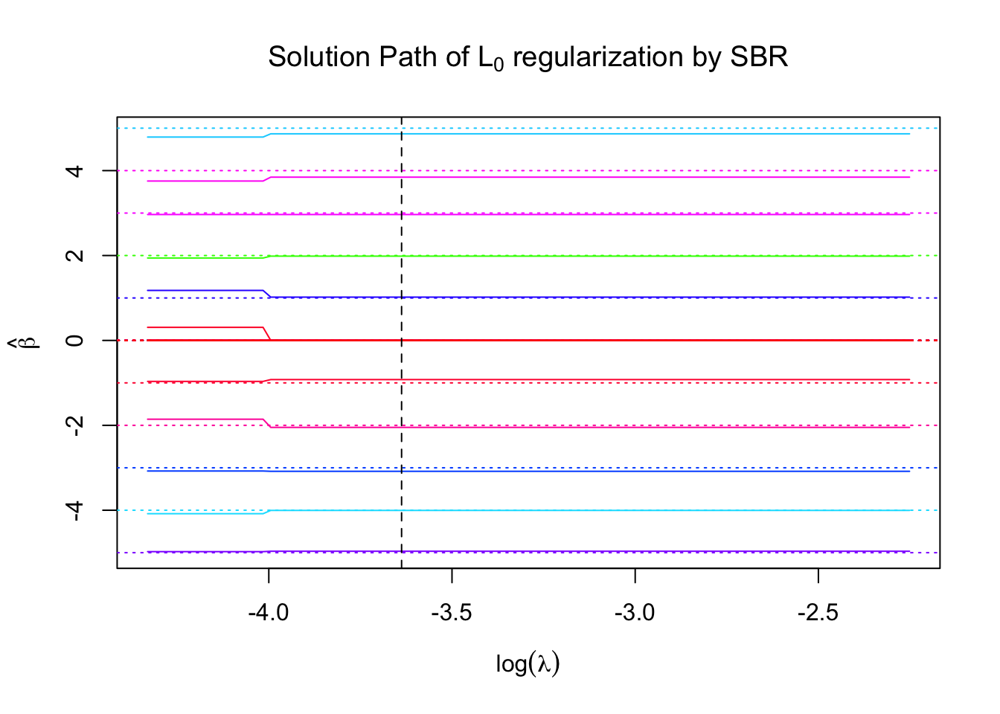
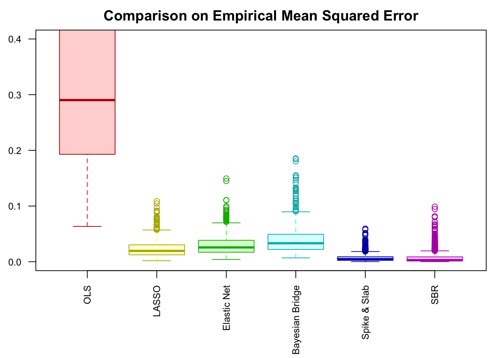
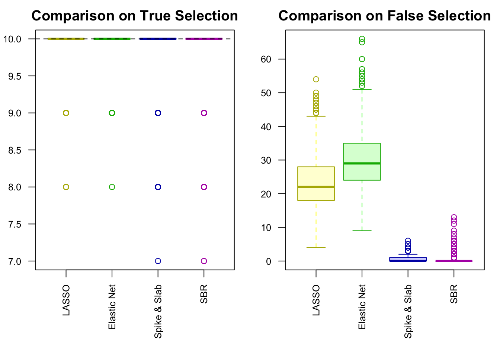

SBRr Compared with Bayesian Bridge and Spike-and-Slab MCMC
Lei Sun
2017-02-10
Last updated: 2017-04-30
Code version: 3fcbfe2
Introduction
Using simulated data with correlated design matrix \(X\), we compare SBRr with BayesBridge by Polson et al., 2014 and BoomSpikeSlab by Steven L. Scott, on estimating multiple linear regression coefficients and selecting relevant variables in a high-dimensional setting.
\(L_0\) regularization is relatively robust to the choice of \(\lambda\).
Each row of the design matrix \(X_{n\times p}\) is iid \(N(0, \Sigma_p)\), where \(\Sigma_p = B_{p\times d}B_{d\times p}^T + I_p\), \(B_{ij} \sim N(0, 1)\), \(d\ll p\), in order to impose high collinearity among the columns of \(X\). In addition, \(X\) is column-wise normalized such tht for each column \(X_j\), \(\bar X_j = 0\), \(\|X_j\|_2 = 1\). The coefficients \(\beta\) is generated such that \(\eta = 90\%\) of them are zero, and \(1 - \eta = 10\%\) of them are equally spaced from zero in both negative and positive directions. Under this setting, the signal-to-noise ratio (SNR, in db) is defined as \(10\log_{10}\left(\frac{\|X\beta\|_2^2}{n\sigma_e^2}\right)\).
In our setting, \(n = 120\), \(p = 100\), \(d = 5\). \(\beta\) is a length \(100\) vector, in which \(90\) are zero, and \(10\) are \(\left\{-5, -4, -3, -2, -1, 1, 2, 3, 4, 5\right\}\). \(\text{SNR} = 20\).

Performance comparison: SNR = 20

Performance comparison: SNR = 15

Performance comparison: SNR = 10
Performance comparison: SNR = 5
Performance comparison: SNR = 0
Session Information
sessionInfo()R version 3.3.3 (2017-03-06)
Platform: x86_64-apple-darwin13.4.0 (64-bit)
Running under: macOS Sierra 10.12.4
locale:
[1] en_US.UTF-8/en_US.UTF-8/en_US.UTF-8/C/en_US.UTF-8/en_US.UTF-8
attached base packages:
[1] stats graphics grDevices utils datasets methods base
other attached packages:
[1] mvtnorm_1.0-5 BoomSpikeSlab_0.7.0 Boom_0.5
[4] MASS_7.3-45 BayesBridge_0.6 glmnet_2.0-5
[7] foreach_1.4.3 Matrix_1.2-8
loaded via a namespace (and not attached):
[1] workflowr_0.4.0 Rcpp_0.12.10 codetools_0.2-15 lattice_0.20-34
[5] digest_0.6.9 rprojroot_1.2 grid_3.3.3 backports_1.0.5
[9] git2r_0.18.0 magrittr_1.5 evaluate_0.10 stringi_1.1.5
[13] rmarkdown_1.4 iterators_1.0.8 tools_3.3.3 stringr_1.2.0
[17] yaml_2.1.14 htmltools_0.3.5 knitr_1.15.1 This R Markdown site was created with workflowr